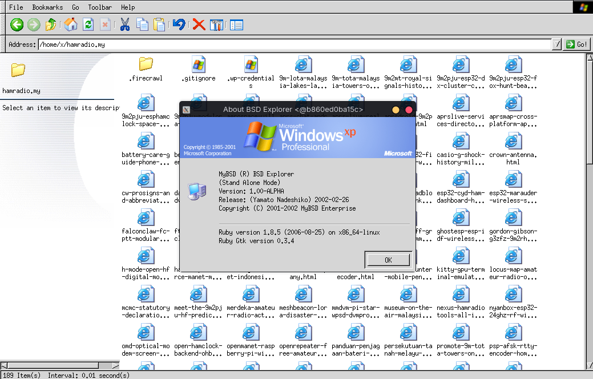

MyBSD Tomoyo Explorer is the iconic Ruby & GTK+ 1.2 graphical file manager created by Ariff Abdullah (skywizard) for the Malaysian BSD community (1999–2002). Now fully packaged for Linux, macOS, Windows, and FreeBSD.

Engineered during the golden era of Unix workstation desktops with uncompromising responsiveness.
Features custom C extension hooks (ruby-gtk-fix) that accelerate GtkCTree tree traversal and GtkCList row rendering directly via direct memory pointers.
Includes meticulously styled 16x16 and 32x32 icon packs: Windows XP, Classic Windows 98, and KDE 2.0 with GdkPixbuf transparency rendering.
Built-in storage monitor parses filesystem tables (FreeBSD mount & Linux /proc/mounts) with visual usage meters and capacity bars.
Left-hand directory tree navigator with right-hand file canvas, multi-selection, file info cards, and quick path entry bar.
Pre-packaged Linux AppImage bundles its own isolated Ruby runtime and GTK 1.2 libraries, requiring no installation of deprecated packages on your host. CI-built and published automatically via GitHub Actions.
Preserved under the permissive BSD 2-Clause License with clean modern documentation, automated CI/CD releases, and AUR integration.
Binaries and packages are automatically built and published via GitHub Actions.
Portable x86_64 AppImage with bundled Ruby 1.8 & GTK 1.2 runtime. Runs on Ubuntu, Debian, Fedora, Arch, and more.
Official Arch User Repository package. Installs system-wide with menu shortcut and icons.
Detects your architecture and configures binaries, icons, and .desktop launchers in ~/.local/bin/.
Packaged MyBSD Tomoyo Explorer.app with retro Apple icon and runtime environment.
Automatically downloads the app bundle, places it in ~/Applications/, and symlinks tomoyo-explorer into ~/.local/bin/.
Since GTK+ 1.2 is an X11 application, macOS requires XQuartz for graphical display. Install via Homebrew:
Complete standalone Windows distribution containing the executable launcher, themes, configs, and scripts.
Lightweight 64-bit native launcher binary compiled with MinGW-w64 with embedded icon and version resources.
Run seamlessly with full graphical acceleration and native Linux filesystem access on Windows 10/11:
Downloads the source tarball, builds the ruby-gtk-fix C extension, and configures binaries, icons, and .desktop launchers in ~/.local/.
Install natively via FreeBSD ports with Ruby 1.8 and GTK+ 1.2.
Original source distribution archives with C extension source and full icon sets.
Ariff Abdullah (skywizard, skywizard@MyBSD.org.my / ariff@FreeBSD.org) was a pioneering Malaysian open source developer and esteemed FreeBSD committer. His legendary contributions to the FreeBSD kernel audio architecture (sound(4)) and the Malaysian Unix community helped shape BSD adoption throughout Southeast Asia.
Between 1999 and 2002, as part of the MyBSD Project, Ariff authored Tomoyo Explorer (BSD Explorer) to give FreeBSD and Unix users a blazingly fast, lightweight, and customizable graphical desktop file manager in Ruby.
This preservation project updates and packages his original work so that software historians, Unix enthusiasts, and modern developers can experience and celebrate this remarkable milestone in Malaysian computing heritage.